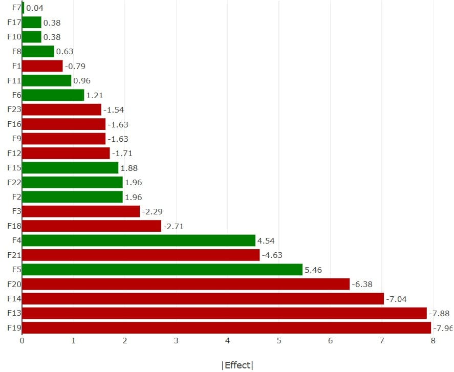
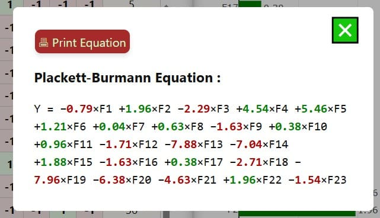

📕 EbookPlackett–Burman-DEMO
Plackett–Burman-DEMO
Plackett–Burman Plan - Factor [F] :
Démo simplifiée. Cette version fonctionne uniquement avec l’exemple intégré. Les fonctions d’import, d’export et d’édition libre sont restreintes pour la démonstration.
Run StatMate™ Plackett-Burman
StatMate™ Plackett–Burman plans auto-initialises when the page loads. It analyzes the effects of factors on a response variable and provides visual results. It takes the data of each Factor [F] (each column) which can be added manually or uploaded.
1️⃣ Select the number of factors. The tool supports from 3 up to 27 factors.
2️⃣ Configure factors by setting name and low (–1) & high (+1) levels in table.
3️⃣ Enter the response. Each entry updates the Plackett–Burman design.
4️⃣ Click on 📊 Equations to view effects and the resulting regression equation.
The final 📊 chart displays values of the effects in descending order for quick identification.
🟩 Green & 🟥 Red bars for positive & negative effects. Procedure :
Use the Export 💾 or Import 📂 buttons to save or to load experiments.
For trial up to 7 factors, switch between and for added convenience, you can switch between the factor table and the DoE table by clicking the 'Show DoE tab' button when there are up to five variables.
📘 User Manual and 📕 Ebookaccessed at any time.
📘 User Manual
Effects Chart
StatMate™ Plackett-Burman
StatMate™ Plackett-Burman module is an efficient fractional factorial experimental designs, primarily used for screening and identifying the most influential variables among a large number of factors. Plackett-Burman designs are two-level fractional factorial plans with run sizes modulo 4 (12, 20, 24, 28, 32, etc.) from Hadamard orthogonal matrices. They allow estimation of main effects assuming interactions are negligible.
Buttons & Commands
📂 Import Data: Load or 💾 Export Data Download the data CSV/txt/xls/json file.
Print Tab: Print the data table or the final equation.
Dim⯆ selector allows the selection of Factor [F] (column) number
Equation is updated dynamically and shown with 📊 Equation
📘 User Manual and 📕 Ebookaccessed at any time.
Results
StatMate™ Plackett-Burman provides a final 📊 chart which displays values of the effects in descending order for quick identification. Its internal intelligence also provides equation.


StatMate™ - Plackett-Burman Plan - DEMO
© 2025 SciencExpert. Website designed and developed by  SciencExpert™. All rights reserved. Unauthorized use or reproduction is prohibited.
SciencExpert™. All rights reserved. Unauthorized use or reproduction is prohibited.